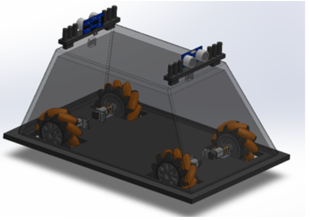
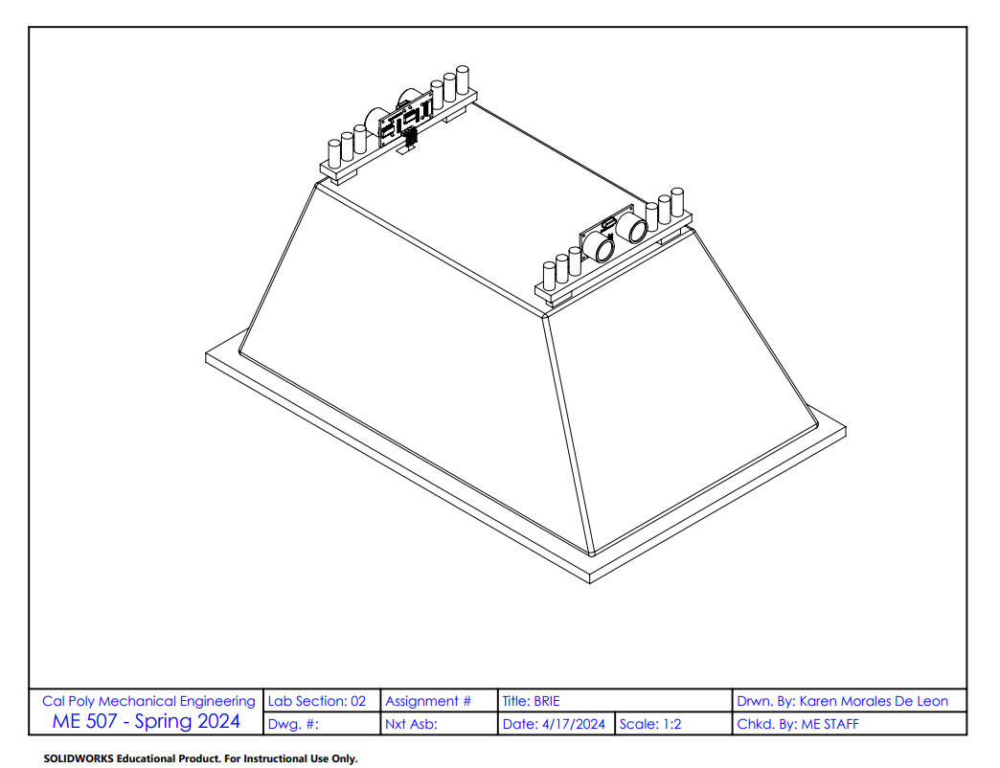
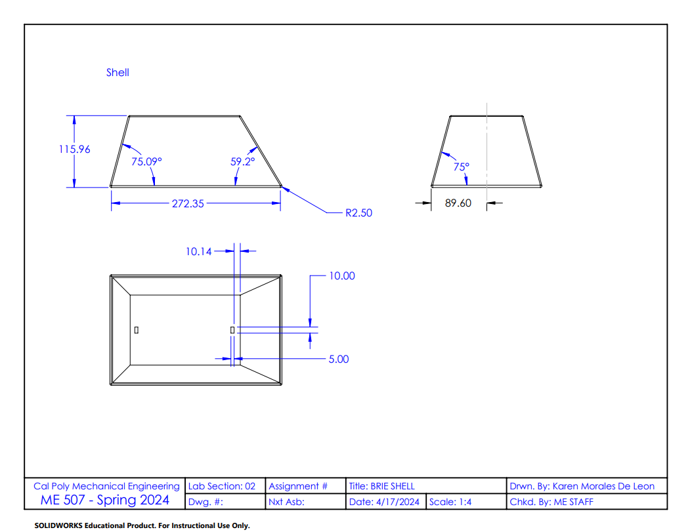
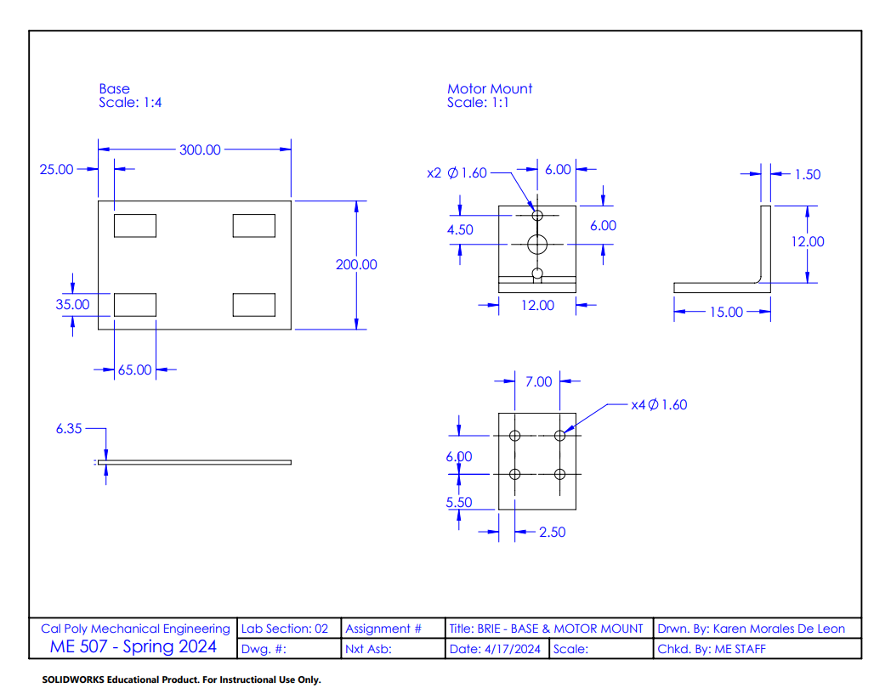

Introduction
This page provides documentation for the CAD designs and diagrams used for B.R.I.E. The overall manufacturing process for this droid is simple and includes 3D printing and the use of a lazer cutter. The overall manufacturing process took a estimated time of 3 days. It is important to note that our team desired to replicate a half scale model of the droid. The image below displays the develop 3D Model of the MSE-6 droid with the use of ultrasonic sensors and mecanum wheels attached to the four motors.

Figure 1:3D Model of B.R.I.E
CAD Files Overview
This section lists and describes the CAD files used in the project.
- CAD File 1: The overall assembly drawing of the droid.
- CAD File 2: 3D Printed Shell for B.R.I.E.
- CAD File 3: Lazer cut diagram for the base of B.R.I.E.
- CAD File 4: 3D Printed Motor Shaft for B.R.I.E.
- CAD File 5: 3D Printed Motor Mount for B.R.I.E.
CAD Diagrams
This section includes various diagrams used in the CAD design process.

Figure 2:Assembly Drawing of B.R.I.E

Figure 3:3D Printed Shell Design

Figure 4:Lazer Drawing for Base